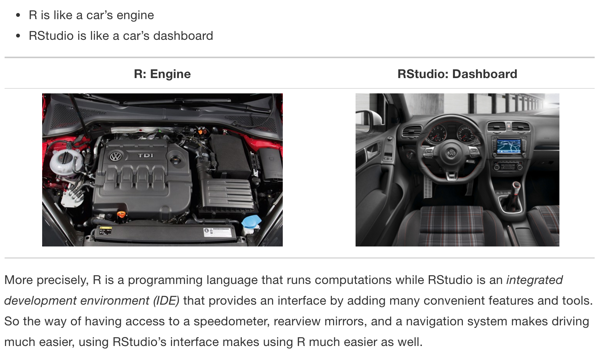
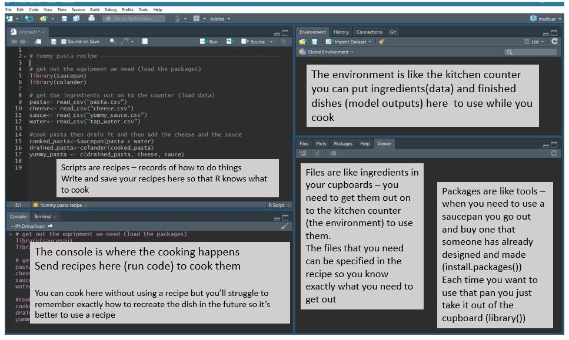

R functions
To help us navigate / remember when to use what, the following sections consolidate some of the R functions used in class and on assignments.
Tools: Applets
The main source of in-class applets has come from @iscam and can be found: http://www.rossmanchance.com/applets/index2021.html
We also use the Bootstrapping applets from StatKey at: https://www.lock5stat.com/StatKey/
Tools: R & R Studio
See a great video (less than 2 min) on a reproducible workflow: https://www.youtube.com/watch?v=s3JldKoA0zw&feature=youtu.be
- You must use both R and RStudio software programs
- R does the programming
- R Studio brings everything together
- You may use Pomona’s server: https://rstudio.pomona.edu/

Data Structure
Always, it is important to understand the format of the data. For example, how many rows (observational units)? How many columns (variables)? Are the variables numbers or categories? There are many ways to see the data, and it is highly recommended that you regularly check back to remind yourself of the data structure.
glimpse()prints the data with variable types (but makes the columns into rows)names()prints the column (variable) namesstr()is likeglimpse()but provides a little more information about the structure of the dataframehead()prints the first few rows of the dataframe (tail()prints the last few rows)- click on the “environment” tab, then click on the name of the dataframe to see the data in the console
Wrangling
Data wrangling is used when working to change data in one format to another. We have regularly used the pipe function (|>) to layer commands. Data wrangling will be an even bigger part of the data analysis pipeline when we start to work with continuous variables (e.g., height).
The pipe syntax (|>) takes a data frame (or data table) and sends it to the argument of a function. The mapping goes to the first available argument in the function. For example:
x |> f(y) is the same as f(x, y)
y |> f(x, z) is the same as f(y, x, z)
A great source of help is the data wrangling cheatsheet here: https://rstudio.github.io/cheatsheets/html/data-transformation.html
Data verbs take data tables as input and give data tables as output (that’s how we can use the chaining syntax!). The functions below are from the R package dplyr, and they will be used to do much of the data wrangling. Below is a list of verbs which will be helpful in wrangling many different types of data.
sample_n()take a random row(s)head()grab the first few rowstail()grab the last few rowsfilter()removes unwanted casesarrange()reorders the casesselect()removes unwanted variables (andrename())distinct()returns the unique values in a tablemutate()transforms the variable (andtransmute()like mutate, returns only new variables)group_by()tells R that SUCCESSIVE functions keep in mind that there are groups of items. Sogroup_by()only makes sense with verbs later on (likesummarize()).summarize()collapses a data frame to a single row. Some functions that are used withinsummarize()include:min(), max(), mean(), sum(), sd(), median(), andIQR()n(): number of observations in the current groupn_distinct(x): count the number of unique values in the variable (column) calledxfirst_value(x), last_value(x)andnth_value(x, n): work similarly tox[1], x[length(x)], andx[n]
If you happen to be using a function that exists in the dplyr package and in a different package, you’ll want to tell the computer where to find the appropriate function. For example,
dplyr::filter().
Plotting
The R package ggplot2 will be used for all visualizations. Remember that the layers of a plot are put together with the + symbol (instead of the |> command).
A great source of help is the data visualization cheatsheet here: https://rstudio.github.io/cheatsheets/html/data-visualization.html
Each plot starts with
ggplot(data)and then adds layers. The minimal additional layer is ageom_XXX()layer which describes the geometry of the plot.Some things to notice:
- when layering graph pieces, use
+. (When layering data wrangling, use|>.) geom_XXX()will put theXXX-type-of-plot onto the graph.aes()is the function which takes the data columns and puts them onto the graph.aes()is used only with data columns and you always need it if you are working with data variables.- A full set of types of plots is given here: https://rstudio.github.io/cheatsheets/html/data-visualization.html (and in many other places online).
- when layering graph pieces, use
If you happen to be using a function that exists in the ggplot2 package and in a different package, you’ll want to tell the computer where to find the appropriate function. For example,
ggplot2::xlim().
Statistical Inference
The main simulation tools we have used for creating null distributions come from the R package infer.
- There are many examples available on the infer vignette page: https://infer-dev.netlify.com/index.html
-
Typically, the following steps are followed:
- calculate the test statistic
teststat <- data |> specify(variable information) |> calculate(the form of the statistic) - create the null values of the statistic
nullstats <- data |>
specify(variable information) |>
hypothesize(give information about the type of null hypothesis) |>
generate(repeat the process, provide info about the process) |>
calculate(the form of the statistic)nullstats |>
visualize()nullstats |>
visualize() +
shade_p_value(specify where the observed statistics is)nullstats |>
get_p_value(specify the observed statistic and the direction of the test)- If you happen to be using a function that exists in the infer package and also in a different package, you’ll want to tell the computer where to find the appropriate function. For example,
infer::specify().
Probability models
Generally, we’ve used the mosaic package which calculates probabilities and adds a graphical representation so that the calculated values can be checked against your intuition. Some of the functions we’ve used include:
xpnorm()normal probabilityxqnorm()normal quantile (also called: cutoff, z*)xpbinom()binomial probabilityIf you happen to be using a function that exists in the mosaic package and in a different package, you’ll want to tell the computer to use the appropriate function. For example,
mosaic::xpnorm().